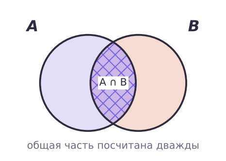
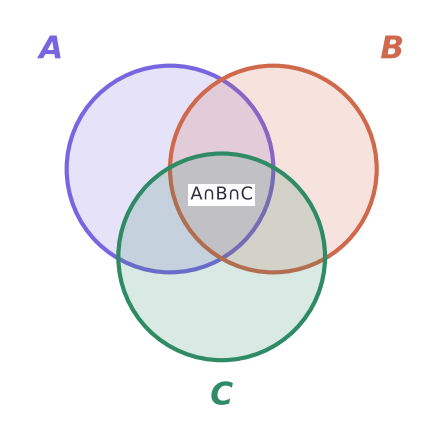
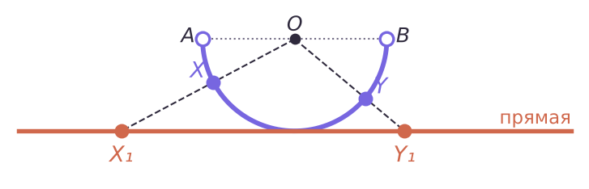

Сколько элементов и как сравнить бесконечности
Общая часть посчитана дважды — один раз вычитаем.


40 человек: англ. 20, нем. 17, фр. 15; попарно 7, 5, 6; все три 3.
Равномощные множества — те, между которыми оно есть. Счётное — равномощное N.
| номер n | 1 | 2 | 3 | 4 | 5 | … |
|---|---|---|---|---|---|---|
| чётное 2n | 2 | 4 | 6 | 8 | 10 | … |
| целое | 0 | 1 | −1 | 2 | −2 | … |
Z тоже счётно: нумеруем «змейкой».
Луч из центра O даёт пару каждой точке: точек на открытой полуокружности «столько же», сколько на всей прямой.

И своя задача на три множества